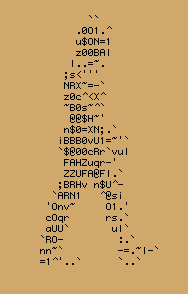

My favorite books are The Passion According to G.H. and Notes from the Underground.
My favorite poems are A Flor e a Náusea and O Cão sem Plumas.
My favorite films are Phantom of the Paradise and 2001: A Space Odyssey.
My favorite animes are Touch and Shouwa Genroku Rakugo Shinjuu.
My favorite albums are Acabou Chorare, Clube da Esquina and Hisscivilization.
